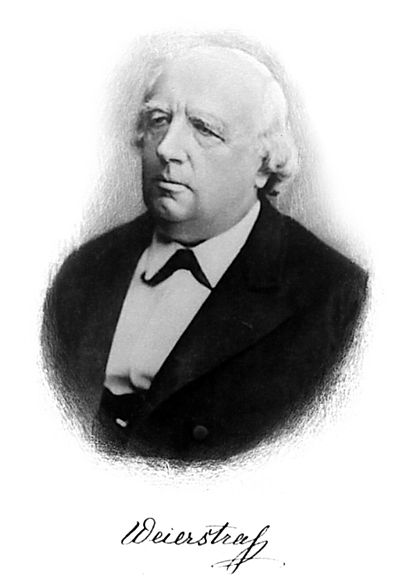

1815–1897
German
Analysis, foundations of mathematics
Karl Theodor Wilhelm Weierstrass was born in Ostenfelde, Westphalia. His father insisted he study law and finance at the University of Bonn, where Weierstrass spent four years socialising and fencing but never sat his final examinations. He then trained as a secondary school teacher and spent fifteen years teaching at gymnasia in provincial towns — arithmetic, German, geography, penmanship — while doing research in mathematics in isolation.
In 1854, Weierstrass published a paper on Abelian functions in Crelle's Journal that was so brilliant it earned him an honorary doctorate from Konigsberg and, in 1856, a professorship at the University of Berlin. He remained there for the rest of his career, attracting students from across Europe. His Berlin lectures — never published in his lifetime — became the gold standard for rigorous analysis, establishing the epsilon-delta definitions and the systematic use of uniform convergence that we still teach today.
Weierstrass's influence pervades this entire course. The Bolzano–Weierstrass theorem, the M-test, the approximation theorem, the identification of uniform convergence, the rigorous treatment of power series, the epsilon-delta definition of the derivative — all trace directly to his work or his lectures. His 1872 construction of a continuous nowhere-differentiable function shattered the intuition that continuity implies differentiability and forced mathematicians to confront the gap between geometric intuition and analytic reality. Through students like Cantor, Schwarz, Mittag-Leffler, and Kovalevskaya, Weierstrass shaped the entire tradition of rigorous analysis.
| Phase | Page | Referenced for |
|---|---|---|
| Phase 2 | Completeness of ℝ | Demanding precision in real number definitions |
| Phase 2 | The Squeeze Theorem | Rigourised by Cauchy and Weierstrass |
| Phase 2 | Monotone Convergence | Rigourisation of analysis |
| Phase 2 | Bolzano–Weierstrass | Generalised Bolzano's result; taught it in Berlin lectures |
| Phase 3 | The Derivative | Perfected the epsilon-delta definition (1860s) |
| Phase 3 | Trig Derivatives | Replaced infinitesimals with limits |
| Phase 3 | Integrability | Bolzano–Weierstrass used for uniform continuity proof |
| Phase 4 | Power Series | Understanding of radius of convergence |
| Phase 4 | Trig Series | Rigorous definition of trig functions via series (1860s) |
| Phase 4 | Term-by-Term Operations | Identified uniform convergence as the correct condition (1841) |
| Phase 5 | Uniform Convergence | Found the fix for Cauchy's error: uniform convergence |
| Phase 5 | The Weierstrass M-Test | The M-test developed in Berlin lectures (1860s–1880s) |
| Phase 5 | Weierstrass Approximation | Every continuous function on $[a,b]$ is uniformly approximable by polynomials (1885) |
| Phase 6 | Determinants | German algebraic school |
| Phase 6 | Jordan Normal Form | Elementary divisor theory (1868) |
| Phase 7 | Partial Derivatives | Clarifying differentiability in multiple variables |
| Phase 8 | Cauchy–Lipschitz | Weierstrass M-test used in Picard iteration convergence |
| Phase 9 | Continuity on Compact Sets | Extreme value theorem (1861) |
| Phase 9 | Baire Category | Continuous nowhere-differentiable function (1872) |
| Phase 11 | Fourier Series | Fourier convergence question driving rigorous analysis |
| Phase 11 | Parseval's Theorem | Weierstrass approximation used in Parseval proof |
| Phase 14 | Norms and Equivalence | Norm equivalence in finite dimensions |
| Phase 14 | Riesz's Lemma | Bolzano–Weierstrass property lost in infinite dimensions |